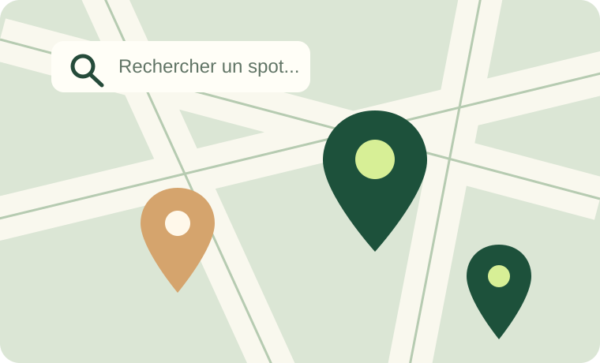
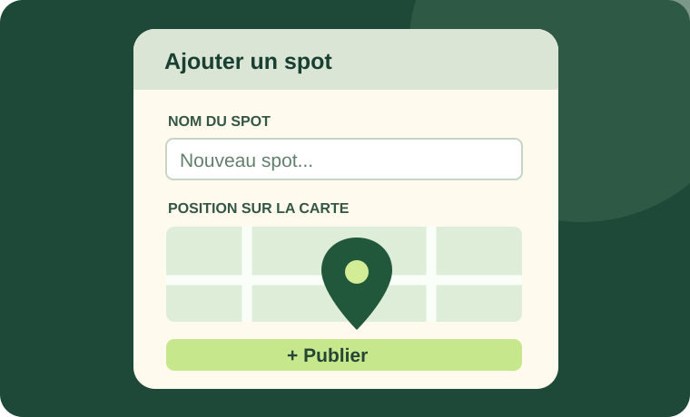
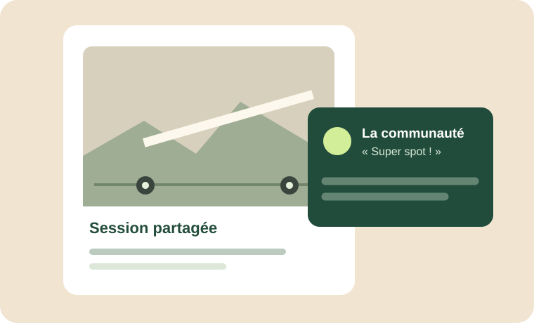

01
Explore les spots
Une carte interactive pour découvrir les spots de skate autour de toi, rechercher une adresse et préparer ta prochaine session.
CARTE INTERACTIVEEXPLORE · RIDE · SHARE
La ville est ton terrain de jeu.
Découvre de nouveaux spots, partage tes trouvailles et retrouve la communauté skate autour de toi. Le prochain spot n'est jamais très loin.
01 / FONCTIONNALITÉS
SkateSpot rend la découverte et le partage de spots plus simples, pour se concentrer sur l'essentiel : rider.

Une carte interactive pour découvrir les spots de skate autour de toi, rechercher une adresse et préparer ta prochaine session.
CARTE INTERACTIVE
Un spot qui manque sur la carte ? Ajoute-le et indique ses coordonnées pour permettre à d'autres skateurs de le trouver.
SPOTS COMMUNAUTAIRES
Partage des photos et des commentaires sur les spots pour enrichir les informations accessibles aux autres riders.
PHOTOS & COMMENTAIRES02 / L'EXPÉRIENCE
SkateSpot réunit les spots issus de RideMyPark et ceux ajoutés par les utilisateurs sur une même carte. Une façon simple d'explorer ce qui t'entoure et de découvrir des endroits que tu ne connaissais pas.
✓ Recherche par nom de spot
✓ Géolocalisation et carte OpenStreetMap
✓ Fiches détaillées et contenu communautaire
03 / ABOUT · DERRIÈRE LE PROJET
« Je voulais retrouver cette liberté de découvrir un nouveau spot, sans perdre du temps à le chercher. »
Le skate m'accompagne depuis des années. En France comme au Canada, j'ai découvert à quel point chaque ville a ses lieux, ses habitudes et ses rencontres. Pourtant, quand on arrive dans un nouveau quartier, savoir où rider n'est pas toujours évident.
En 2026, pendant ma formation de développeur full-stack, j'ai imaginé SkateSpot : une carte communautaire où l'on peut repérer un spot, en ajouter un et partager des photos ou des commentaires. J'ai réalisé seul ce Portfolio Project pour Holberton School, de la première idée au MVP mobile.
04 / SOUS LE CAPOT
Une architecture mobile et API conçue pour faire évoluer les fonctionnalités et les contenus.
PRÊT POUR UNE SESSION ?
Retrouve le projet, son code source et son évolution sur GitHub.